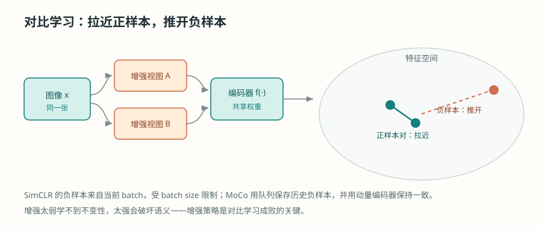
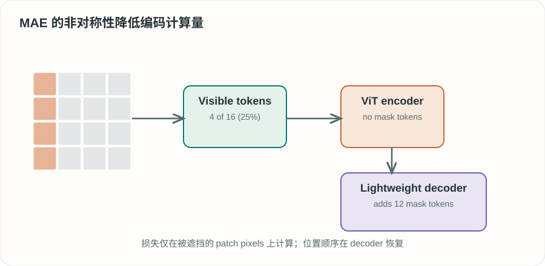
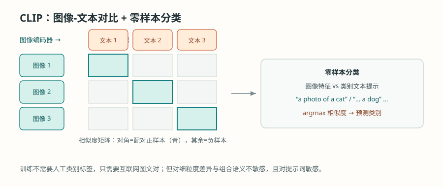

CHAPTER 26 · SELF-SUPERVISED LEARNING
自监督学习与基础模型：让数据自己给出监督信号
高质量标注昂贵且难迁移到新设备。自监督学习从数据本身构造监督：让同一图像的两个视图靠近、让不同图像远离，或让模型从可见 patch 重建被遮盖的部分。本章讲清对比学习、掩码重构、图文对比三条路线的目标函数、代价与失败条件，并说明它们如何汇入 CLIP 与 SAM 这类基础模型。
标注瓶颈与范式转变
前 25 章的方法几乎都依赖一个前提：大量高质量标注。但像素级分割标注一张图需数十秒，医学影像的病变区域微小、标注更慢；换一台设备采集，模型性能可能大幅下降。标注不仅贵，而且难以跨域迁移。
自监督学习（Self-Supervised Learning, SSL）换了一个思路：从数据本身构造监督信号。同一张图的两个不同裁剪视图应被看作“同一张图”——这就是一个天然、免费的监督信号。用了预训练得到的表征后，下游任务只需少量标注做适配。本章的三条路线分别基于对比、重建与图文对齐。
对比学习：SimCLR 与 MoCo
对比学习的目标一句话：拉近相似样本，推开不相似样本。自监督场景下，“相似”指同一张图的不同增强视图（正样本对），“不相似”指来自不同图像的样本（负样本）。
SimCLR（Chen 等，2020）流程极简：对每张图应用两种随机增强得到两路视图，用同一编码器抽特征，再用 NT-Xent 损失最大化正样本对相似度、最小化负样本对相似度。设 z_i 与 z_i⁺ 为正样本对、τ 为温度、sim 为余弦相似度：
分母对负样本求和，因此负样本越多，任务越难、信号越强。τ 越小，对难负样本的惩罚越大。

SimCLR 的局限是负样本数量受 batch size 限制。MoCo（He 等，2020）用队列（queue）保存历史 batch 的特征作为负样本池，并用动量编码器（指数移动平均更新）保持队列中特征的一致性，从而摆脱了大 batch 的硬件门槛。动量系数需与 batch size 联动：太小则队列特征不一致，太大则更新过慢。
掩码重构：MAE 的 75% 掩码率
MAE（Masked Autoencoders）（He 等，2021）把 BERT 的掩码建模搬到视觉：随机遮盖大部分 patch，让模型从可见 patch 重建被遮盖的部分。它的两个关键设计是高掩码率与非对称编解码。
为什么掩码率高达约 75%（而 BERT 只遮 15%）？因为图像存在大量空间冗余：天空、草地等相邻区域像素高度相似。如果只遮很少，模型靠邻居插值就能重建，学不到语义；遮得够多，模型才被迫理解结构。在解码端，MAE 只用可见 patch（约 25%）送入编码器，大大降低计算量，再用轻量解码器重建全部 patch。

import random
def sample_mask(n_patches, mask_ratio, seed=0):
"""返回 (keep_ids, mask_ids) 的随机划分."""
rng = random.Random(seed)
ids = list(range(n_patches))
rng.shuffle(ids)
n_keep = int(n_patches * (1 - mask_ratio))
return sorted(ids[:n_keep]), sorted(ids[n_keep:])
keep, masked = sample_mask(196, 0.75) # 14x14 = 196 个 patch
assert len(keep) == 49 # 只编码 25%
assert len(masked) == 147
assert not (set(keep) & set(masked)) # 两集合不相交
assert len(keep) + len(masked) == 196
enc_ratio = len(keep) / 196
assert enc_ratio == 0.25
print(f"keep={len(keep)} masked={len(masked)} 编码比例={enc_ratio:.0%}")这条路线也有边界：对纹理密集的图像（遥感、病理、显微），空间冗余没那么强，75% 掩码常常过头，适当降到 50–60% 往往更好。这说明自监督的配置高度依赖数据特点，照搬标准设置不总是最优。
视觉-语言对比：CLIP 与零样本分类
前面的方法都只用图像。而 CLIP（Contrastive Language-Image Pre-training）（Radford 等，2021）用自然语言作为监督信号：一对图像编码器与文本编码器，在大量图文对上做对比学习，让配对的图像-文本特征靠近、不配对的相互远离。

N 个图像与 N 个文本组成相似度矩阵，对角线是配对正样本，其余为负样本；图像与文本两个方向各算一次交叉熵。推理时把类别写成提示文本，取与图像特征最相近的一类。训练完成后，CLIP 展现出零样本分类能力：不必在新数据集上训练，只需把类别写成文本提示（如 “a photo of a cat”），比较图像特征与各文本特征的相似度即可。其局限也很明确：对细粒度概念（如 “金属表面的轻微划痕”）区分力不足，对组合性理解有限（“狗追猫” 与 “猫追狗” 的视觉元素相同）。这些局限推动了后续改进（如 SigLIP）。
提示式分割：SAM 的位置
SAM（Segment Anything）（Kirillov 等，2023）把分割重构成可提示（promptable）任务：给定点、框或粗掩码，输出对应物体的掩码。架构是三段式：重型图像编码器（基于 MAE 预训练的 ViT，每张图只跑一次）、轻量提示编码器、轻量掩码解码器；后者可对每个新提示重复调用。其训练数据 SA-1B 由“模型辅助标注”的数据引擎迭代产生（详见第 22 章）。
把 SAM 放在本章的脉络里：它是“大规模无/弱标注预训练 + 轻量适配”的一个代表。需要再次强调：SAM 是类别无关的，它知道“这里有一个物体”，但不给出类别名，也不替代语义分割的评价口径。
适用条件与边界
- 对比学习依赖增强与负样本：增强太弱→不学；太强→破坏语义。SimCLR 的负样本受 batch size 限制，MoCo 用队列缓解，但动量系数需与 batch size 联动。
- MAE 的掩码率不是通用常数：空间冗余强的自然图像适用高掩码率，纹理密集图像应适当降低。
- CLIP 不是万能分类器：对细粒度差异与组合语义不敏感；零样本结果对提示词很敏感。
- 评估协议要对齐：linear probe、微调、零样本三种口径不可混比；不同预训练数据与规模也会改变结论。
- 成本与收益：自监督预训练计算代价高，真正节省的是标注；小团队通常直接使用已公开的预训练权重（第 24 章）。
检查理解：为什么 MAE 要把掩码率设得远高于 BERT 的 15%？
BERT 处理的语言信息密度高，几乎每个词都携带语义，遮太多会丢失上下文。而图像存在大量空间冗余（相邻像素高度相似），如果只遮很少，模型靠邻居像素就能重建，学不到高层语义。把掩码率提到约 75% 后，冗余被大幅去除，模型才被迫理解图像结构，学习有效的表征表示。
原始资料与口径
本页的 SimCLR/MoCo、MAE、DINO/IBOT、CLIP 与 SAM 均以对应原论文为准；各类 ImageNet 线性探测精度与数据规模依赖预训练数据、编码器与训练日程，本页不固化具体数值。
- A Simple Framework for Contrastive Learning of Visual Representations (SimCLR, arXiv:2002.05709)
- Momentum Contrast for Unsupervised Visual Representation Learning (MoCo, arXiv:1911.05722)
- Masked Autoencoders Are Scalable Vision Learners (MAE, arXiv:2111.06377)
- Emerging Properties in Self-Supervised Vision Transformers (DINO, arXiv:2104.14294) · iBOT: Image BERT Pre-Training with Online Tokenizer (arXiv:2111.07832)
- Learning Transferable Visual Models From Natural Language Supervision (CLIP, arXiv:2103.00020)
- Segment Anything (SAM, arXiv:2304.02643)